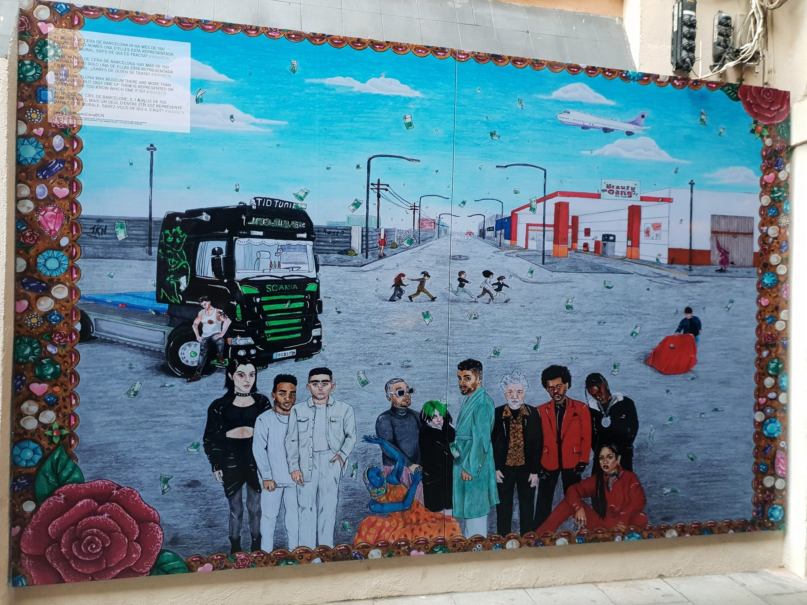

1. Wall art for MCB
Rosalía-inspired illustration for a mural at Barcelona’s Wax Museum (MCB)


I was chosen to participate in a workshop organized by my university in collaboration with Barcelona’s Wax Museum. During this workshop, we got to choose one celebrity from a list of the ones that were exhibited in the museum and create a design that would later become a three meters long mural. We were free to create what we wanted but it had to represent the person, without portraying him or her literally. The objective was for the mural to be kind of a riddle, where the viewer had to guess who was being represented or find him within the drawing.
I chose to create my wall art around Rosalía, a singer from Barcelona, because not only do I admire her, but because she has a cool imaginary, full of iconographies and different elements that I could represent. I decided to draw the full image by hand and, taking as reference renaissance paintings, created a scene full of people who had worked with her, as well as other characters and components that appeared in her music videos. I also framed it with gemstones and roses, just like her iconic nails and jewelry. The goal was to create a really kitsch scene, full of different things that represented her that the viewer could start finding while he stared at the image. The original drawing (approximately 100x70 cm) was then scanned and enlarged to fit the wall where it’s exhibited right now, in front of the museum.
Commission for MCB
2022
2022